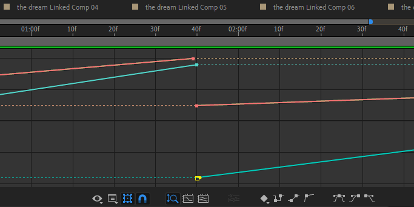

sprint x | muziekvideo
Aanpak
Voor mijn Sprint X project heb ik muziekvideo geregisseerd en bewerkt in Adobe Premiere Pro en Adobe
After Effects. Ik heb al een beetje ervaring met deze 2 programmas maar ik wilde mezelf naar mijn
limits pushen en mezelf uitdagen om een hele muziekvideo in elkaar te editen op een manier die ik
altijd al heb bewonderd.
Ik heb deze muziekvideo laten schieten op 2 camera's, een Nikon D3500
DSLR
camera die werd
bestuurd door 1 van mijn beste vrienden: Jort, en een iPhone camera met de app "Rarevision VHS Lite"
die het effects gaf van een VHS camera, die werd bestuurd een van mijn goede vrienden:
Merijn.
Deze
muziekvideo was voor een liedje van mij en 1 van mijn beste vrienden: Tibo genaamd "the dream" en
dit
is het volledige proces van het maken van mijn muziekvideo voor Sprint X.
Voorbereidingen
Voordat we konden beginnen met het maken van een muziekvideo moest ik natuurlijk brainstormen, dit
deed ik gelukkig niet alleen maar met mijn vrienden. We bedachten eerst een locatie, iets wat niet
te uitgebreid was maar alsnog een redelijk goede locatie kon zijn voor mijn allereerste muziekvideo.
Tibo kwam met het idee om te filmen bij een tankstation in Nederweert doordeweeks na 23:00 in de
hoop dat er weinig autos zouden zijn tijdens het filmen. Ik vond het gelijk een goed idee, er is
goede belichting daar, het is dan donker, de locatie zelf ging best goed samen met het liedje
zelf. Dit werd de definitieve locatie.
Na de locatie bedacht te hebben begon ik te denken aan de benodigdheden voor deze muziekvideo, wat
niet heel uitgebreid hoefde te zijn. Allereerst had ik een speaker nodig, we dachten eraan om
misschien vanuit de telefoon het geluid van het liedje af te spelen tijdens het filmen, maar een
speaker zou je veel beter in de juiste sfeer brengen om een muziekvideo te schieten, dus we
gebruikten een JBL Charge 3 van Tibo die we konden gebruiken. Ik wilde 2 cameras gebruiken, 1 DSLR
camera die ik zelf heb
maar ook een VHS camera die tegelijk zou filmen met de andere camera van een andere hoek. In plaats
van te zoeken naar een VHS camera op Marktplaats dacht ik naar alternatieven en toen schoot het
mij te binnen dat er zat apps zijn die hetzelfde effect creëren, dus ik ging op zoek naar de
perfecte app en uiteindelijk kwam ik bij "Rarevision VHS Lite". Ik probeerde hem uit en ik vond het
perfect. Hieronder zie je het effect van de camera.

Na alle benodigdheden verzamelt te hebben zat er nog maar 1 ding op, filmen! We hadden wat moeite met plannen aangezien we alle 4 man tegelijk nodig hadden en sommigen konden niet op dagen dat andere wel konden, maar na een perfecte dag gekozen te hebben gingen we direct aan de slag.
Het filmproces
Zoals ik al zei wilde ik 2 cameras tegelijk aan hebben. Jort bediende de DSLR camera en Merijn bediende de telefoon camera. Ik wilde 2 shots zodat ik deze kon mengen in de video en uiteindelijk heeft het echt een vet effect gecreërd, maar dat zien we zometeen wel. Het filmen ging goed. We namen verschillende takes op verschillende plekken van het tankstation. We namen ook een paar omgeving shots, slowmotion shots, solo shots en shots met Tibo en ik beiden in beeld. Op een gegeven moment hadden we naar ons gevoel genoeg beelden om te gebruiken dus we sloten het af voor de dag en nu kwam het aan op mij om de video in zijn geheel te brengen.
Het editproces
Zoals ik al zei heb ik Adobe Premiere Pro en Adobe After Effects in combinatie gebruikt voor het editen van deze video. Met Premiere Pro legde ik vooral de basis van de video en met After Effects deed ik alle specials effects. Het laatste wat ik wilde met deze muziekvideo is dat hij saai was, ik wilde er een hoop effecten op gooien zonder dat het een kliederboel zou worden maar juist een mooi geheel en dat is precies wat ik heb gedaan. Qua inspiratie dacht ik vooral aan de volgende muziekvideos:
Ik zal alle belangrijke editpunten van de video nu behandelen. Ik maakte de video in een 1600 x 1080 formaat ipv 1920 x 1080 omdat ik een wat ouderwetsere formaat wilde geven aan de video gecombineerd met een moderne editstijl. Voor het begin stukje heb ik gezocht naar een VHS startup video omdat ik vond dat dat een goede manier was om de video te starten, vervolgens ben ik echt gaan beginnen met het editen.
Het eerste wat ik heb gedaan om de video een goede opbouw te geven was zoeken naar fragmenten die er goed uitzagen in slowmotion, die plakte ik achter elkaar op de beat terwijl ik zowel iedereens rol in de video als het lied en de artiesten zelf introduceerde. Dit deed ik doormiddel van simpele texts met de font "AXIS", daarop deed ik de blending mode "Difference" en dat gaf zo'n soort effect.

Het volgende wat ik had gedaan was iets wat in deze video heel vaak terugkomt op verschillende manieren: transities. Ik maakte hier een rotating-zoom transitie en hier gebruikte ik After Effects voor. Na de juiste keyframes gemaakt te hebben begon ik deze te bewerken met de Graph editor om de transities meer smooth te maken en minder statisch. Om zo'n resultaat te krijgen moet een graph hebben die eruit ziet als een golf en niet een strakke lijn. Met de graph editor heb ik heel veel animaties en transities versoepelt, dit zul je zeker vaak terugzien in de video.
Uiteindelijk krijg je dan een transitie zoals degene hieronder.
Nog een type effect wat ik veel heb gebruikt was eentje waarmee ik de achtergrond van degene in beeld zou verwijderen, oftewel een soort chroma key, om er op verschillende manieren mee te spelen. Ik deed dit met sommige transities, achtergrondeffecten, tekst achter de persoon etc. Ik heb dit echt vaak gebruikt. Doormiddel van de Roto Brush tool kon je bepaalde dingen selecteren om te masken, net als een chroma key. Hieronder zie je hoe dat eruit ziet.
Ik heb dit effect op zoveel manieren gebruikt, maar mijn favoriete is waarschijnlijk de manier hieronder. Ik heb hier de achtergrond gedistort en RGB's verstoort wat in mijn ogen echt een vet effect gaf. Dit heb ik gedaan met de effecten "Turbulent Displace", "S_Glow" van de Sapphire pluginpack en "VR Chromatic Aberrations". Dit in combinatie met een transitie zag er uiteindelijk zo uit.

De boven beschreven effecten zijn eigenlijk de enigen die ik volledige wilde beschrijven omdat dat het meest voornamelijk type aan effecten is wat terugkomt in de video op veel verschillende manieren. Doormiddel van dat soort effecten en verschillende soorten camerabeelden heb ik een hele muziekvideo in elkaar bewerkt. Ik ben er zeker er trots op, ik denk ook dat de professional in mij ligt bij het gebied Design aangezien ik hier volledig mij creativiteit kan laten spelen. Hieronder kunt u de video in zijn geheel bekijken.
Feedback & Reflectie
Qua feedback heb ik van al mijn vrienden en familieleden alleen maar positieve dingen gehoord. Ze vinden het een mooi geheel met professionele effecten die de video toch een stuk unieker maken. Van niemand heb ik iets slechts gehoord. Mijn groepsgenoten Rens en Madelief vonden het ook echt goed en leuk dat ik mijn passie in mijn project naar voren kon brengen. Mijn klasgenoot Gabriella vond ook dat het goed was en had uberhaupt niet verwacht dat ik met zoiets zou komen en Ravi, ook een klasgenoot, vond het ook gewoon een vette video. Al met al zeker positieve feedback.
Om hierop te reflecteren kan ik eigenlijk alleen maar trots zijn. Ik heb mezelf een goede uitdaging gegeven over iets waar ik van houdt, en ik kan zeker zeggen dat ik de uitdaging heb overwonnen. Ik ben trots op het resultaat, alles wat ik geleerd heb en het voelt echt alsof ik de professional in mij heb gevonden. Al met al zeer tevreden.
© 2022 Yassin Chehlaoui